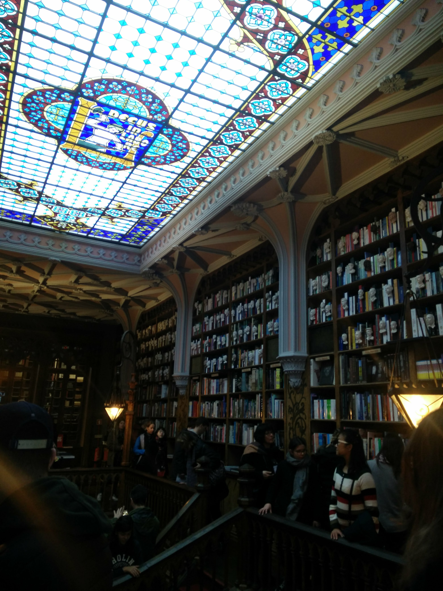

Listado de enlaces:
- Space es una de las empresas que confían en los jóvenes formados a través del programa Conecta
Empleo de Fundación Telefónica (EFE)
- Entrevista en GestionaRadio (Audio)
- Entrevista en RedEmprendeVerde (Red
EmprendeVerde)
- Primer premio GreenWeekend (Youtube)
- Starteam Finalista GoAppSevilla 2016 (Universidad
de Sevilla)
- Presentación de proyectos en el Espacio RES (Universidad
de Sevilla)
- Canvax Biotech: Una nariz molecular para detectar tumores (Diario
de Córdoba)
- Artículos publicados en El Tercer
Puente
- Taller de divulgación científica de la Fundación DesQbre (CanalSur)
- Aparición del blog en Hoy por Hoy, Cádiz (Cadena
Ser)
- Entrevista en la revista universitaria 87 Grados (87
Grados)
- Resumen de las Jornadas «Recordando a José Saramago» (Varios medios)
- Arrecian las quejas sobre Bolonia (Granada
Hoy)
- La UGR organiza las I Jornadas de Representación Estudiantil (Ideal)
- Entrevistas EUS 2010 (Tiviyu)
- Los blogs ayudan a democratizar el conocimiento científico (Ideal)
- Entrevista en con motivo de las I Jornadas Blogs y Ciencia (RNE)
- Constituyen la Coordinadora Andaluza de representantes de Estudiantes (Diario
de Córdoba)